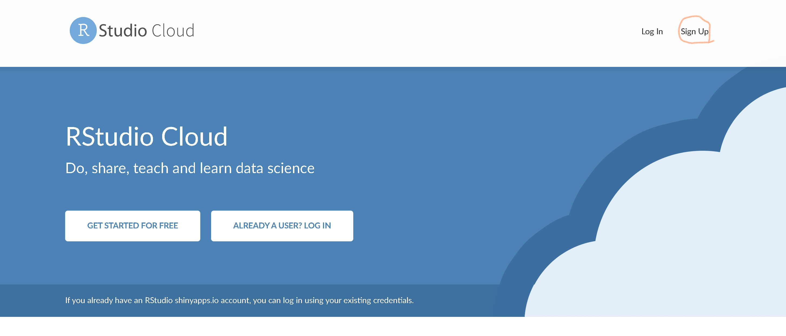
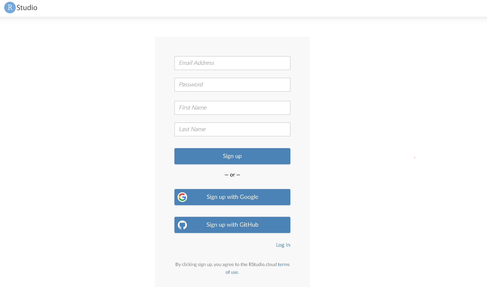
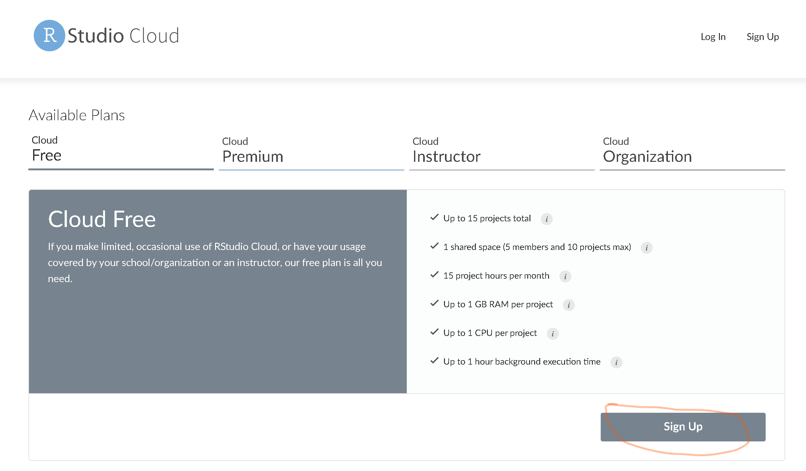
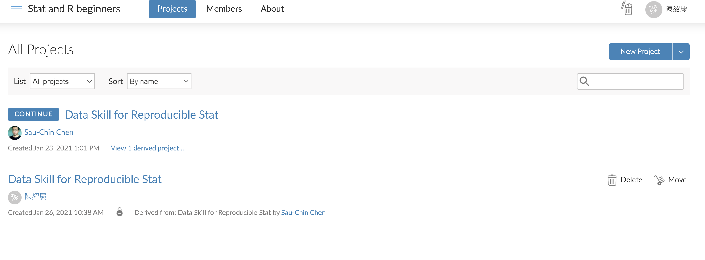

可重製統計線上學習專案
起源
資料科學技巧除了是大數據商務與學術應用的基礎能力，也能深入理解統計與機率的數學原理，更是實現可重製科學研究操作的基礎。開始在研究專案落實可重製科學研究操作之後，我一直想在教學中落實。資料科學技巧的入門必學的資料清理、資料視覺化等課題，在傳統統計課程是被忽略的單元，即使使用開源統計軟體JASP與jamovi，因為教材都是清理完成的資料，無法幫助學生學習資料科學技巧。
2019年Rstudio Cloud正式上線，註冊使用者能免費在個人雲端工作空間創建專案，使用與本機版幾乎一模一樣的功能。2020年推出的講師專案，每月付15美金，就能製作共享專案，透過邀請讓學生登入取得專案。也就是說任何申請講師專案的Rstudio Cloud用戶，可以開發經營個人的非同步線上教學平台。
我遇到的挑戰還有教材內容。以我的學生客群來說，現在還沒有為心理學相關科系學生設計，平行學習資料科學技巧與統計觀念的教材是缺乏的。幾年前自編的中文電子書是以傳統課程架構編輯，並未加入資料科學技巧，但是要整合原來的內容就必須翻新教材架構。很幸運這幾年認識了英國格拉斯哥大學心理學系PsyTeachR團隊的核心教師Lisa DeBruine，這個團隊已經開發從大學一年級到研究所的R與統計學習教材，並且不斷實踐。2021年初她公開了電子書可重製科學的資料科學基本功以及R套件，這套資源的架構與內容，就是我所期望的新世代心理科學學生需要的教材。
可重製科學的資料科學基本功在十個單元的前七個安排完整的資料科學技巧學習示範與演練問題，最後四個單元才是機率以及統計方法。以傳統統計科學的架構來看，一定有人懷疑能否真的學到觀念與正確的方法。但是我從研究的經驗體認到，先習得資料科學技巧，更容易學習機率觀念，以及運用通用線性模型能有效組織所有基本統計方法。
編寫一本這樣的中文書是個很花時間的工程，因此我決定結合各地有學習需要的學生，將PsyTeachR的資源轉換成非同步線上課程，累積眾人的學習紀錄，形成更新前一版中文教科書的資源。這篇網誌是課程導覽，接著就來看學生如何加入這門課程，如何運用專案學習資料科學技巧與基本統計。
註冊與登入R studio Cloud
首先到R studio Cloud網站註冊帳號，首創這份網誌時的頁面如下圖，首次註冊從右上角”Sign Up”開始。

註冊方式有三種：自填資料、連結Google帳戶、連結Github帳戶。個人推薦想深入學習的學生用Github帳戶註冊，也方便在這篇網誌留言。

確認註冊方法後就會到選擇使用方案的頁面，只是想體驗或加入線上課程專案，只要選擇免費方案(Free)。

認證完成就能登入個人工作空間(workspace)，請見影片示範。確認可以操作，就能透過專案邀請連結加入課程專案，影片有示範入門操作，專案裡的Student_clickme.Rmd這份文件，有說明如何搭配可重製科學的資料科學基本功的內容進行自主或合作學習。
學習方案建議
-
專案內置的檔案有可重製科學的資料科學基本功的源始Rmarkdown檔案，提供學生自行編輯筆記與演練書裡的範例。這些源始Rmarkdown檔案保留原始的英文內容，對於英文程度不高的學生會是挑戰，建議找朋友同學一起學習。
-
各單元演練題己經完成中文化改編。請先閱讀單元電子書內容，並演練所有範例題，再來操作挑戰題。進行順序請見專案裡的
Student_clickme.Rmd這份文件。 -
加入專案的學生會在個人的工作空間看到專屬的專案副本，就像下圖示範。個人專案內容是學生加入時，這份課程專案的最新內容。學生如果想了解演練題的操作是否正確，在學校上我開設的課程，可以直接找我討論；透過網路遠端參與的學生，可以透過網站所留的聯絡方式，請我給你提供意見，我確認之後，會找時間在你的專案裡，與問題有關的檔案內容留下文字建議。

教學材料更新計畫
可重製科學的資料科學基本功的第8及第9單元與我自編的中文電子書大部分重疊，經過幾次的授課操作，深覺資料科學技巧與通用線性模型是新一代學習者必學的基礎。要加入這些必須直接使用R等程式語言做為學習工具，因此必須要捨棄依賴套裝軟體的思維，先幫助學生將R內化為個人能力。我希望透過累積現場與遠端學生的學習紀錄與回饋，加速中文電子書的更新。新的電子書將整合為個人網站的一部分，幫助更多學生更有意願運用R學習統計，還在使用套裝統計軟體的學生與老師也能有興趣更新工具。
歡迎來上課
除了電子書內容是英文，與統計有關的部分只比大學部基礎統計稍難一些，即使是大一學生，只要願意找輔助資料，也能獲得修習研究方法及進階課程所需要的基礎統計能力。如果發現內容有任何錯誤，請使用網誌留言回應，方便同時運用這套專案的學生了解。如果是個人學習觀念或寫作程式碼的問題，請使用網誌最下方提供的個人聯絡方式告知，我會在你的專案中給予建議。
不論你是會修我的現場課程，還是只能遠端參與的學生，想要學習的話就點下專案邀請連結加入吧。